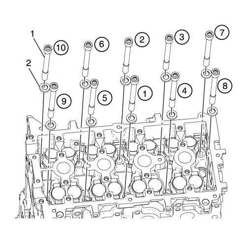

Sustitución de la culata — con EN-50176
Herramientas especiales
| • | EN-50176 Plataforma de soporte del tren motor |
| • | EN-49802 Soporte de la base |
| • | EN-50177 Retención del apoyo del soporte |
Si desea informarse sobre herramientas regionales equivalentes, consultar Herramientas especiales .
Procedimiento de desmontaje
- Abra el capó.
- Desconecte el cable de batería negativo. Consultar Desconexión y conexión del cable de batería negativo .
- Vacíe el sistema de refrigeración. Consultar Drenaje y llenado del sistema de refrigeración .
- Extraiga el colector de admisión superior. Consultar Sustitución del colector de admisión superior .
- Extraiga el colector de admisión inferior. Consultar Sustitución del colector de admisión inferior .
- Retire el colector de escape. Consultar Sustitución del colector de escape .
- Desmonte la bobina de encendido. Consultar Desmontaje de la bobina de encendido .
- Desmontar la tapa del árbol de levas. Consultar Sustitución de la tapa de los árboles de levas .
- Retire la carcasa del termostato. Consultar Sustitución del termostato del refrigerante del motor .
- Desmonte de la bomba de agua. Consultar Sustitución de la bomba de agua .
- Desmonte el indicador de nivel de aceite y el tubo. Consultar Sustitución del tubo de la varilla de nivel de aceite .
- Elevar el vehículo
- Desmonte el cárter de aceite. Consultar Sustitución del cárter de aceite .
- Desmontar la correa de accionamiento. Consultar Sustitución de la correa de accionamiento .
- Desmonte el equilibrador del cigüeñal. Consultar Desmontaje del dispositivo equilibrador del cigüeñal .
- Extraiga el alternador. Consultar Sustitución del generador .
- Retire el dispositivo tensor de la correa de accionamiento. Consultar Retirada del tensor de la correa de accionamiento .
- Monte la plataforma de soporte del tren motor EN-50176, el apoyo del soporte EN-49802 y la retención del apoyo del soporte EN-50177. Consultar Montaje del cambio/motor : con CH-49289 y CH-49290 → con EN-49802 y EN-50176 .

- Extraiga los pernos (1, 3) y la tuerca (2) del montaje del motor.
- Desmonte el soporte del motor (4).
- Retire la cubierta delantera del motor. Consultar Desmontaje de la tapa delantera del motor y de la bomba de aceite .
- Desmonte la cadena de distribución. Consultar Sustitución y ajuste de la cadena de distribución del árbol de levas .
- Desmonte el árbol de levas de admisión y escape. Consultar Sustitución del árbol de levas .

- Retire la culata. Consultar Retirada de la culata .
Procedimiento de montaje
- Limpie las superficies de sellado y elimine todos los restos de suciedad y de material procedente de la antigua junta.
- Coloque una junta nueva para la culata.
Precaución: Consulte Precaución con las fijaciones en la sección Prólogo
- Introduzca los pernos nuevos de la culata (1) con las arandelas (2) y apriete el perno (1) a 22 N·m + 82° (16 lib. pie + 82°).
- Monte el árbol de levas. Consultar Sustitución del árbol de levas .
- Monte la cadena de distribución. Consultar Sustitución y ajuste de la cadena de distribución del árbol de levas .
- Monte la tapa delantera del motor. Consultar Montaje de la tapa delantera del motor y de la bomba de aceite .
- Monte el soporte del motor (4).
- Apriete el perno (3) y las tuercas (2) de retención del soporte del motor al motor, a 58 N·m (43 lib. pie).
- Apriete el perno de retención (1) del montaje del motor a la carrocería, a 50 N·m (37 lib. pie).
- Elevar el vehículo
- Desmonte la plataforma de soporte del tren motor EN-50176, el apoyo del soporte EN-49802, la retención del apoyo del soporte EN-50177. Consultar Montaje del cambio/motor : con CH-49289 y CH-49290 → con EN-49802 y EN-50176 .
- Monte el tensor de la correa de accionamiento. Consultar Montaje del tensor de la correa de accionamiento .
- Instale el alternador. Consultar Sustitución del generador .
- Montar el compensador del cigüeñal. Consultar Montaje del balancín del cigüeñal .
- Monte la correa de accionamiento. Consultar Sustitución de la correa de accionamiento .
- Montar el cárter de aceite. Consultar Sustitución del cárter de aceite .
- Bajar el vehículo.
- Instalar el indicador de nivel de aceite y el tubo. Consultar Sustitución del tubo de la varilla de nivel de aceite .
- Montar la bomba de agua. Consultar Sustitución de la bomba de agua .
- Monte la carcasa del termostato . Consultar Sustitución del termostato del refrigerante del motor .
- Monte la tapa del árbol de levas. Consultar Sustitución de la tapa de los árboles de levas .
- Monte la bobina de encendido. Consultar Montaje de la bobina de encendido .
- Monte el colector de escape. Consultar Sustitución del colector de escape .
- Monte el colector de admisión inferior. Consultar Sustitución del colector de admisión inferior .
- Monte el colector de admisión superior. Consultar Sustitución del colector de admisión superior .
- Rellene el sistema de refrigeración. Consultar Drenaje y llenado del sistema de refrigeración .
- Conecte el cable negativo de la batería. Consultar Desconexión y conexión del cable de batería negativo .
- Cierre el capó.
| © Copyright Chevrolet Europe. Reservados todos los derechos |